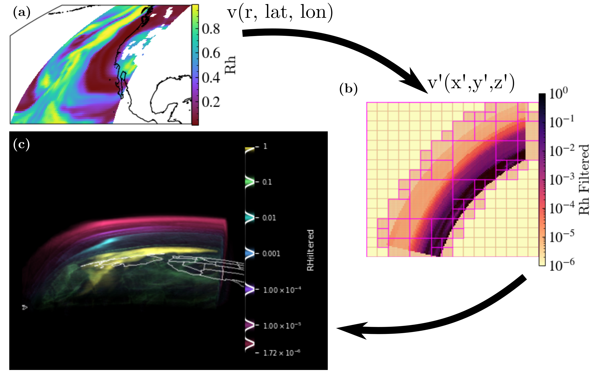
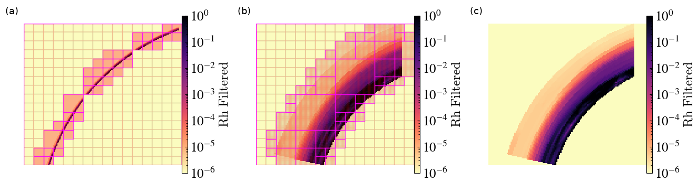

Embedded Transformations within yt_xarray#
In addition to providing methods for creating yt datasets that directly
reference xarray datasets, ongoing development within yt_xarray
(yt_xarray PR #75)
will provide a number of methods for building cartesian yt datasets with
embedded transformations and interpolation of xarray
datasets defined in non-cartesian coordinates. This approach provides a convenient
way of utilizing yt methods that rely on cartesian geometries without having to
pre-interpolate data, making reproducible workflows to, for example, generate
3D volume renderings much simpler to make.
The general workflow is
open the xarray dataset
define the transformation from the dataset’s native coordinatees to cartesian coordinates
define the method of interpolation
initialize the yt dataset
In pseudo-code, the above steps look like:
import yt_xarray
from yt_xarray.transformations import GeocentricCartesian, build_interpolated_cartesian_ds
ds = yt_xarray.open_dataset(...) # or xr.open_dataset
gc = GeocentricCartesian(...)
ds_yt = build_interpolated_cartesian_ds(ds, gc, ...) # a cartesian yt dataset
Initially, build_interpolated_cartesian_ds only sets up the cartesian grid (or grids)
that will be used to wrap the non-cartesian geometry and actual interpolation of the
data onto the cartesian grid (or grids) is delayed until yt needs the data. During
initialization of the yt dataset (build_interpolated_cartesian_ds, step 4 above),
the user can specify parameters that control how the cartesian grid is built. For
example, the following pseudo-code:
build_interpolated_cartesian_ds(
ds,
gc,
grid_resolution=(16,16,16),
refine_grid=True,
refine_by=8,
refine_min_grid_size=2,
...)
grid_resolution specifies the coarse grid resolution of 16 cells in each dimension.
When refine_grid is True, yt_xarray will apply a recursive subdivision of
the domain into a number of smaller grids: starting from the coarse grid, the domain is
divided in half along each dimension and grid cells are filled with a binary image mask,
where cell values are set to 1 if they fall within the bounds of the non-cartesian
geometry. Division proceeds recursively, with empty grids being discarded, until the
remaining grids satisfy an adjustable fill criteria (or the max number of iterations
has been reached). In addition to the recursive bisection, an implementation
of the grid refinement algorithim of Berger and Rigoutsos (1991) is available to use
by setting refinement_method='signature_filter'.
In the following, two examples with real datasets are described, with images from sequential stages of the above transformation workflow along with a final 3D volume rendering. The first example uses a seismic tomography model of the Earth’s upper mantle beneath the Western U.S. (Schmandt and Humphreys, 2010), while the second uses a locally downloaded 3D MERRA-2 reanalysis data file (Global Modeling and Assimilation Office, 2015).
Volume Rendering Workflow: Seismic Tomography#

(a) The data is initially loaded with xarray in native coordinates which in this
case is internal geodetic coordinates (depth beneath the Earth’s surface,
latitude and longitude). From here, all the usual xarray methods apply: the image
here is a slice at 100 km depth through shear wave speed anomalies (Dvs),
generated in this case with yt_xarray’s convenience wrapper of yt.SlicePlot (see
previous section).
(b) After defining the transformation from geodetic coordinates to cartesian coordinates,
a wrapping cartesian grid is refined to generate a cartesian yt dataset. This
cartesian dataset can be used with any yt method. A yt.SlicePlot with grid and cell
annotations illustrates the refined grid structure: the squares outline in bold represent
the edges of grids while fainter lines indicate grid cells. The starting grid here was 32x32x32
with a refinement factor of 8, resulting in a dense sampling where there is data in the
underyling geometry. In constructing this plot, yt will access data only in the grids
intersected by the desired cutting plane and grids are processed individually. This means that
only a subset of the full dataset is interpolated on-demand, as needed by yt.
(c) Once the cartesian yt dataset is available, methods in yt that rely on cartesian
ray tracing are available to use. The image here is a 3D volume rendering of only the
slow velocity anomalies (where Dvs is less than 0). The transfer function used here
consists of a number of gaussian samples of the data spaced linearlly between 0.1 and
8 percent and results in a clear signal of the Yellowstone hot spot track beneath
northeast Idaho and northwest Wymoing, where high temperatures and partially molten
rock decrease the shear wave speed
Volume Rendering Workflow: Atmospheric Geophysics, MERRA-2#
The second example demonstrates an example with a 3D atmospheric field using data from MERRA-2. Due to the small radial length scale of the atmosphere compared to the features being rendered, an additional radial scale factor is applied in transforming to virtual cartesian coordinates.

(a) Again, data is initially loaded with xarray in native coordinates and a plot of relative humidty (RH) at 800 hPa is made using the SlicePlot convenience method.
(b) Defining the transformation in this case is more complicated than the previous case. The data here is defined with dimensions of (pressure level, latitude, longitude) and so an additional transformation from pressure level to altitude is required. Additionally, the radial scale of the atmosphere is small compared to the longitudinal and latitudinal distances of interest here. If we were to transform to geocentric cartesian coordinates, the atmosphere would be very difficult to resolve, as illustrated in panel (a) of the following image:

For the purposes of volume rendering, we can overcome this issue by applying a radial
scale factor: panel (b) shows a scale factor of 20 and (c) shows the same without
the grid annotations. So to create our cartesian yt dataset that contains the xarray
dataset in native geometry, we first must implement a pressure-to-height transformation and then utilize a scaled geodetic to cartesian transformation. Both of these transformations could be contained within a single transformation object, but because this particular MERRA-2 file contains a height variable, the actual implementation can be simplified slightly. In addition to the transformation considerations, the RH field ocntains missing values identify by NaN values. Because projections in yt do not yet handle NaN values well, the interpolation here fills in missing values with a small non-negative number.
(c) Returning to the volume rendering workflow image, once a cartesian yt dataset is initialized, we can again utilize the volume rendering methods. In this case, a logarithmic transfer function highlights a number of relative humidity values (within the range of actual data and avoiding the small nonzero filler used for missing values).
In summary, the embedded transformation framework within yt_xarray also convenient access to methods in yt that require a dataset in cartesian coordinates. A cartesian grid (or grids if using refinement) is built to wrap the underlying non-cartesian geometry and data is read and interpolated onto the cartesian grid on-demand by chunks using the linked xarray dataset.